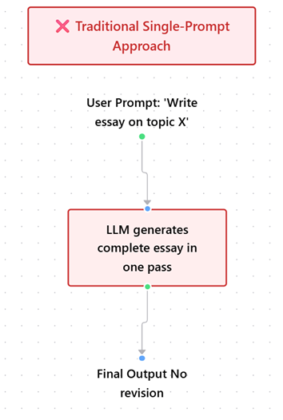
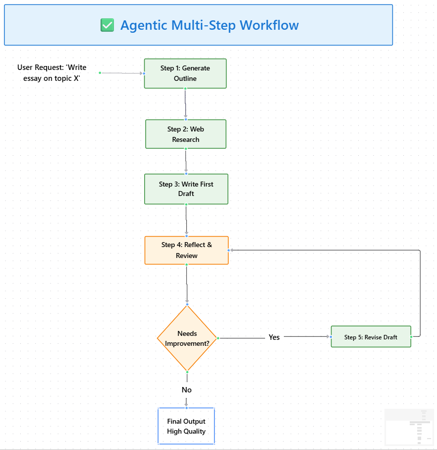

Module 1 — Episode 1
Training:Agentic AI Training
🎯 Learning Objectives
By the end of this episode, you will be able to:
- ✅ Explain what Agentic AI means and how it differs from traditional prompt-based LLM usage
- ✅ Describe the structure and benefits of agentic workflows
- ✅ Decompose complex tasks into smaller, iterative steps suitable for agentic execution
🧭 Overview
This episode introduces the concept of Agentic AI — AI systems that operate through structured, multi-step workflows rather than single, monolithic prompts.
You’ll learn why this iterative, feedback-driven approach produces more accurate and thoughtful outputs, and how it can be applied to build intelligent systems such as research agents.
Agentic workflows are foundational to building autonomous AI applications that can plan, reason, and refine their work over multiple steps.
🧱 Prerequisites
Readers should already understand:
- Basic usage of Large Language Models (LLMs)
- The concept of prompt engineering
- Familiarity with API-based AI applications
🔑 Core Concepts
- Agentic AI – An AI system that performs a sequence of steps or actions to achieve a goal, often involving planning, reasoning, execution, and self-reflection.
- Agentic Workflow – A structured process where an AI system breaks down a complex task into smaller sub-tasks, executes them iteratively, and integrates results for a final output.
- Human-in-the-Loop (HITL) – A design pattern where human feedback or validation is optionally integrated into the AI’s workflow to ensure accuracy and accountability.
- Task Decomposition – The process of breaking down a large, complex goal (e.g., writing a research paper) into smaller, manageable actions that an agent can execute sequentially.
🖼 Visual Explanation
A flow diagram showing the difference between:
1. Single-pass LLM prompt — “Write an essay on topic X.”
2. Agentic Workflow — “Plan → Research → Draft → Review → Revise → Finalize.”
 Caption:This diagram illustrates how agentic workflows introduce iteration, planning, and reflection, resulting in higher-quality outputs compared to single-pass LLM generations.
⚙️ Technical Breakdown
How It Works
1. Task Initiation: The user provides a high-level objective (e.g., “Write an essay about renewable energy”).
2. Planning: The AI agent creates an outline or plan of action.
3. Research: The agent determines what information is needed and may call APIs or perform web searches.
4. Drafting: The agent synthesizes findings into an initial draft.
5. Reflection: The agent evaluates the draft, identifies weak areas, and plans revisions.
6. Revision: It iteratively improves the output, optionally requesting human feedback.
7. Finalization: The agent consolidates all improvements into a final, coherent result.
Why It Works
Agentic workflows leverage iteration and reflection — two principles that mirror human problem-solving.
Instead of generating output in a single pass, the agent:
- Thinks before acting (planning)
- Gathers evidence (research)
- Evaluates and refines its own work (reflection)
This leads to more accurate, contextually rich, and coherent results.
When To Use It
✅ Ideal Scenarios- Research and report generation
- Data synthesis from multiple sources
- Multi-step reasoning tasks
- Applications requiring structured decision-making
- The task is simple and deterministic (e.g., “Summarize this paragraph”)
- Low-latency responses are required
- The cost of multiple LLM calls outweighs the quality benefits
Trade-offs & Limitations
| Aspect | Trade-off |
|---|---|
| Complexity | Requires orchestration logic and multiple LLM calls |
| Performance | Slower execution due to iterative steps |
| Cost | Increased API usage and compute time |
| Reliability | More moving parts can introduce failure points |
| Transparency | Complex workflows can be harder to debug |
Performance Considerations
- Caching intermediate results reduces redundant LLM calls.
- Parallelizing subtasks (e.g., multiple research queries) can offset latency.
- Prompt optimization minimizes token usage across steps.
- Monitoring and logging are essential for debugging multi-step workflows.
💻 Code Examples
Minimal Example
# Pseudocode: Simple agentic workflow for writing a short report
from my_agentic_framework import Agent
agent = Agent()
# Step 1: Plan
outline = agent.llm("Create an outline for an essay on renewable energy.")
# Step 2: Research
search_terms = agent.llm(f"Suggest web search queries for: {outline}")
web_results = agent.web_search(search_terms)
# Step 3: Draft
draft = agent.llm(f"Write the first draft using these findings: {web_results}")
# Step 4: Reflect and Revise
feedback = agent.llm(f"Review this draft for missing points: {draft}")
final_report = agent.llm(f"Revise the draft based on feedback: {feedback}")
print(final_report)
This example demonstrates a basic agentic loop — planning, researching, drafting, reflecting, and revising — each step improving upon the last.
🧩 Real-World Example: The Research Agent
A Research Agent can:
- Accept a topic (e.g., “How to start a rocket company to compete with SpaceX”)
- Plan its research steps
- Perform web searches via APIs
- Synthesize and rank findings
- Generate and refine a markdown report
Such an agent produces a more thoughtful, evidence-based output than a single LLM prompt could achieve.
🚀 Key Takeaways
- Agentic AI transforms LLMs from passive responders into active, iterative problem solvers.
- The power of Agentic AI lies in workflow design, not just model prompting.
- Mastering task decomposition and workflow orchestration is essential to building robust, multi-step AI systems.
> Next Episode: Explore how autonomy levels vary across agentic workflows and how to choose the right degree of autonomy for your application.